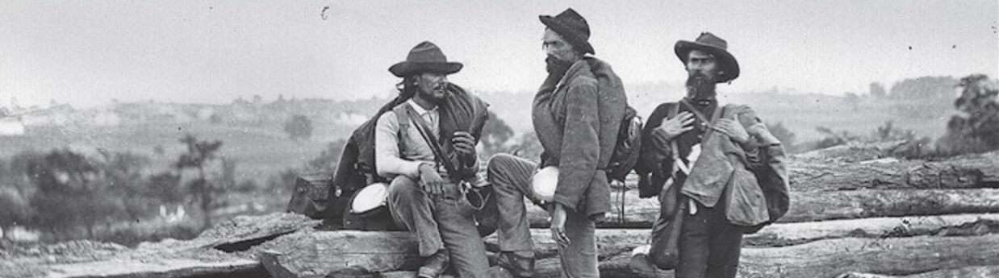

The Civil War and Reconstruction
About the Course
The Civil War and Reconstruction explores the causes and consequences of the American Civil War, covering American history from 1840 through 1876 in great detail. My primary goal is to interpret the multiple threads that run through this epic event and consider how these threads still engage the politics and culture of the present day. In this course we will rely heavily on primary texts, interpreting the events of the day through the words of those men and women who experienced it. We'll examine four main points of interest:
- The crisis of disunion in a young nation
- The personality and motivations of the men and women who responded to that crisis
- The events of the war which shaped the outcome
- The aftermath and the unresolved issues which came out of the conflict
Course Structure
Lectures are provided through podcast or via direct download twice weekly with lecture notes available through e-mail or RSS feed. A detailed summary of the lectures is provided in the links at the left.
About Peter craft
Peter Craft is a professor of American and Military History and the Director of the Taylor Institute for the Study of Military History at Midwest University. He is the author of numerous books, including: Fault Lines: The Causes of the Civil War, Day at Cooper Union (for which he received the Lincoln Prize), and Helen: A Memoir. He is also a frequent contributor to The News Hour and the History Channel.